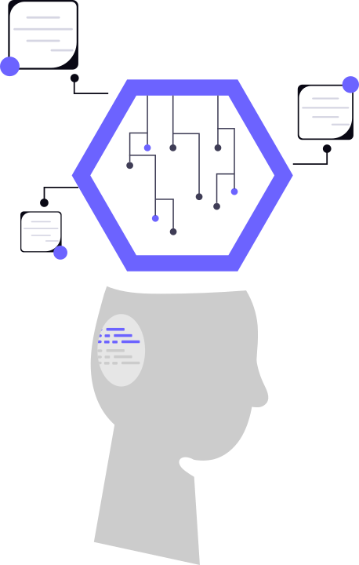
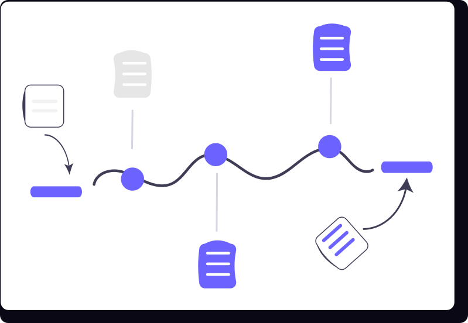
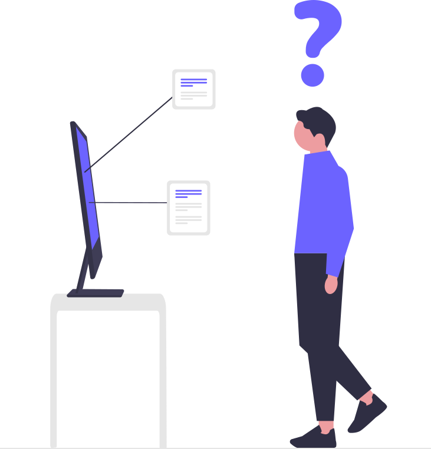

Vimal Joshy
Data Scientist • Machine Learning Engineer • NIT Calicut Alum
Engineering graduate from NIT Calicut and Data Scientist at IQVIA focusing on longitudinal patient data (LRX), machine learning, and Generative AI. Experienced in architecting end-to-end analytics pipelines, automating clinical QC workflows with 95% time savings, and deploying ML models for client-facing healthcare solutions.
Work Experience
Driving quantitative decision-making, deploying machine learning systems, and automating mission-critical analytical workflows.
Data Scientist / Data Analyst
- Generative AI & Indication Modeling: Spearheaded Generative AI initiatives and engineered machine learning models for patient indication identification utilizing large longitudinal prescription (LRX) data, enhancing analytics capabilities across 5+ client accounts.
- Patient Analytics & Cohort Profiling: Analyzed multi-country patient records for source-of-business (SOB), compliance, and retention patterns. Collaborated with project managers and clinicians to combine ML algorithms with domain business logic, delivering insights to 10+ clinical stakeholders.
- Automated QC Framework (95% Efficiency): Built custom automation tooling including a data QC pipeline that reduced quality control runtime by 95% (saving ~100 engineering hours monthly), earning the company's Bronze Award for efficacy.
- SlideSync Deck Automation (80% Speedup): Conceived and developed SlideSync, an automated presentation assembly framework that compressed client deck creation time by 80%.
- Client Delivery & GTM Support: Managed recurring client projects and partnered with the Go-To-Market team to support Real-World Analytics offerings, maintaining a 100% on-time delivery record.
Design Engineer
- Operated in an agile startup environment, wearing multiple hats across market analysis, CAD modeling, and rapid product prototyping.
- Took ownership of project leadership for smart display systems (Mosque Prayer Time Display), coordinating pilot deployments for regional institutional clients.
Leadership & Committee Head
- Head of I-Ink (RAGAM '23): Led an executive team of 10 to strategize and execute major cultural events at South India's largest cultural fest, achieving a 20% surge in attendee participation.
- Head at Lecture Committee (Tathva NIT Calicut): Directed the flagship lecture series, personally coordinating and hosting sessions with 2 Nobel Laureates alongside prominent global scientists.
Featured Projects
Real-world analytics tools, machine learning pipelines, and automation solutions developed for healthcare datasets and enterprise workflows.
Data Science Playground
An interactive browser-based simulation workbench for exploring core statistics, probability theory, and machine learning concepts in real time. Features live visualizers for Central Limit Theorem, Hypothesis Testing (z/t-test), A/B Testing lift analysis, Confidence Intervals, and distributions.
Patient Cohort Creator
A Python-based clustering and segmentation engine designed for large longitudinal patient (LRX) datasets. Groups patients based on multi-dimensional clinical attributes, diagnostic indications, and unsupervised machine learning clustering algorithms.

Enterprise AIGenAI Indication Identifier
Machine learning and Generative AI pipeline engineered at IQVIA to identify and classify disease indications from complex prescription journeys. Scaled to empower real-world analytics for 5+ major client accounts.

Bronze AwardAutomated Clinical QC Engine
Automated quality control and anomaly-detection engine for high-volume patient data tables. Validates data schemas, edge cases, and clinical anomalies, cutting manual QC turnaround time by 95% and saving 100 hours each month.

Productivity ToolSlideSync Deck Generator
Programmatic reporting automation tool that maps analytical dataframes and dynamic visualizations directly into formatted PowerPoint presentations, reducing deck assembly turnaround by 80%.
Skills & Technologies
Proficiencies developed through enterprise production analytics, hackathon implementations, and academic engineering.
Data Science & Machine Learning
Programming & Databases
Data Engineering & Analytics
Tools, Platforms & Workflow
Education & Campus Leadership
Rigorous analytical training combined with large-scale campus organizational leadership.
National Institute of Technology Calicut (NIT Calicut)
Bachelor of Technology (B.Tech) in Mechanical Engineering
2019 — 2023 • Calicut, IndiaRigorous foundation in mathematics, statistical mechanics, computational modeling, and quantitative problem-solving.
Executive Leadership at NIT Calicut
Head of I-Ink (Ragam) • Head of Lecture Committee (Tathva)
2021 — 2023Successfully managed multi-tier student teams, invited 2 Nobel laureates to campus, and spearheaded major technical and cultural festivals with 20% attendance growth.
Honors & Awards
Recognized for innovation in healthcare analytics, operational optimization, and academic contributions.
Hackathon Winner — Patient Cohort Creator
IQVIA HackathonWon 1st place for building an automated ML clustering tool operating on LRX data to segment patient trajectories based on indications and clinical attributes.
Bronze Award for Efficacy & Innovation
IQVIA Corporate AwardConferred in recognition of measurable productivity gains from the Automated QC Tool and SlideSync automation, saving ~100 hours each month.
Ovation Award
IQVIA Patient AnalyticsAwarded for outstanding contributions, data integrity, and high-impact modeling delivered on real-world patient analytics projects.
Best Paper Award
1st International Conference on Mechanical Engineering (ICME)Recognized for highest caliber research and paper presentation among international university and industry submissions.
Professional Certifications
Interested in working together?
Whether you want to discuss a data science opportunity, machine learning project, automation pipeline, or just say hello — my inbox is always open.